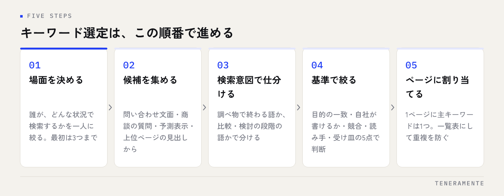

どの言葉で検索されたいのかが決まらないまま、ページを書き始めてしまう。ホームページからの問い合わせが増えないとき、原因がここにあることは少なくありません。キーワード選定のやり方は、センスではなく順番の問題です。決まった段階を踏めば、専門のツールが無くても候補は絞れます。
📌 この記事の結論
キーワード選定は、場面を決める→候補を集める→検索意図で仕分ける→基準で絞る→ページに割り当てる、の順で進めます。中小企業が見るべきは検索ボリュームの大きさではなく、その言葉で来た人が問い合わせまで進むかです。
01キーワード選定のやり方は、この5段階で進める
キーワード選定とは、自社のページをどの検索語で見つけてもらうかを決める作業です。多くの場合、いきなりツールを開いて数字を眺めるところから始めてしまいますが、それだと候補が出すぎて決められません。先に順番を決めます。

段階は5つです。誰のどの場面の検索かを決め、その場面で使われる言葉を集め、検索意図ごとに仕分け、自社の基準で絞り込み、最後にどのページに担当させるかを割り当てる。ツールを使うのは2番目と4番目だけで、残りは自社の事情で判断します。
この順番を守る理由は、後戻りの量が変わるからです。集める前に場面を決めておけば、集まった候補の大半はそのまま使えます。逆に思いついた言葉から集め始めると、絞り込みの段階でほとんどを捨てることになります。
02最初に決めるのは「誰の、どの場面の検索か」
キーワードを探す前に、読み手を一人に決めます。業種や会社規模だけでなく、その人が検索する直前に何が起きたかまで書き出してください。
たとえば「見積書の作成に毎月何日もかかっている経理担当者が、上司から効率化を指示された直後」。ここまで具体化すると、検索する言葉が自然に浮かびます。「経理 効率化」かもしれませんし、「見積書 自動作成」かもしれません。どちらも、漠然と「業務改善」と考えていたときには出てこない言葉です。
場面は複数あって構いませんが、最初は3つまでに絞ります。場面が増えるほど候補が発散し、どのページで受けるべきかの判断が難しくなります。自社の売上に最も近い場面から書くのが原則です。
03候補の集め方は、手元の言葉から始める
候補集めで最初に見るのは、ツールではなく自社の記録です。すでに手元にある言葉のほうが、実際に使われている表現に近いためです。
- 問い合わせフォームや電話での相談内容：お客様が自分の言葉で困りごとを書いた文章そのもの
- 商談で繰り返される質問：「〜はできますか」「〜とはどう違いますか」の形は、そのまま検索語になります
- 検索窓の予測表示と、結果ページ下部の関連する検索：入力途中で出る候補は、実際に検索された組み合わせです
- 上位に出ているページの見出し：同じ話題でどんな切り口があるかが分かります
- 現場の社員が使っている呼び方：業界用語と一般的な呼び方がずれている箇所は、狙い目になります
集める段階では選別しません。重複していても、明らかに数が少なそうでも、一覧に並べます。判断は次の段階でまとめて行うほうが、基準がぶれません。50語から100語ほど並んだら、いったん手を止めて構いません。
04検索ボリュームの見方と、数字との付き合い方
検索ボリュームは、その語がどれくらい検索されているかの推定値です。無料で使えるツールもありますが、見方には注意が必要です。
まず、表示される数字は幅のある推定値であり、実測値ではありません。ツールによって値が違うのは珍しくなく、少数の検索しかない語は範囲表示になることもあります。順位が取れたときに実際に何件来るかは、掲載順位とページの内容でも変わります。数字は順序を比べる材料として使い、そのまま予測に使わないでください。
もうひとつ、ボリュームが大きい語ほど競合が多く、内容の量も求められます。中小企業が全社的な資源を割かずに上位を取れるのは、語数の多い具体的な検索語です。
| 検索語の粒度 | 例 | 競合の強さ | 問い合わせへの近さ |
|---|---|---|---|
| 大きい（1語） | ホームページ制作 | 非常に強い | 遠い（情報収集の段階が多い） |
| 中くらい（2語） | ホームページ制作 費用 | 強い | 中くらい |
| 具体的（3語以上） | ホームページ制作 費用 名古屋 | 比較的弱い | 近い（比較・検討の段階） |
数が少なくても、検討段階の人が使う言葉のほうが価値があります。月に何度も検索されない語でも、その一件が問い合わせにつながるなら、事業としては十分に成立します。
05絞り込みの基準は、この5つで判断する
集めた候補を、次の5点で見ていきます。一つでも大きく外れていれば、いま狙う語ではありません。
- 検索した人の目的が、自社の提供するものと一致するか（調べ物で終わる語ではないか）
- その内容を、自社が経験に基づいて書けるか（他社の記事の要約にしかならない語は避ける）
- 上位に並んでいるページと、同じ土俵に立てるか（大手の比較サイトばかりなら後回し）
- 来てほしい人の言葉になっているか（同業他社や学生ばかりが検索する語ではないか）
- 受け皿になるページを、すぐに用意できるか（書ける見込みが無い語は候補から外す）
3番目は、検索結果を実際に見て判断します。上位10件がすべて大手の比較サイトなら、同じ語で正面から戦うより、条件を足した具体的な語に変えるほうが早く結果が出ます。
判断に迷ったときは
その検索語で上位に出ているページを3つ開き、「自分がこの記事より詳しく書けるか」を自問してください。書けないなら、今の自社には早い語です。書けるなら、勝ち目があります。
06選んだ言葉は、1ページに1つ割り当てる
絞り込んだ語は、ページに割り当てて初めて機能します。原則は単純で、1つのページが狙う主キーワードは1つです。
似た意味の語を1ページに詰め込むと、どの検索に答えるページなのかが曖昧になり、結果としてどの語でも中途半端になります。逆に、意味がほぼ同じ語（言い換え・表記ゆれ）に別々のページを作るのも避けてください。内容が重複し、自社のページ同士で競合します。
割り当てるときは、一覧表を作ります。列は、主キーワード・そのページのURL・検索した人の目的・ページの種類（サービス紹介か、解説記事か、事例か）の4つで足ります。この表があると、新しくページを作るときに「これは既存のどのページと近いか」をすぐ確認できます。
地域名を足す語を扱う場合は、地図検索との関係も整理しておくと無駄がありません。考え方はMEO対策を自分でやる方法にまとめています。
07よくある失敗
やり直しになりやすいのは、だいたい次のどれかです。
社内用語で選んでしまう。自社では当たり前の呼び方が、お客様の検索語とずれていることがあります。商談の録音や問い合わせ文面を読み返すと、ずれが見つかります。
ボリュームの大きい語だけを並べる。数字の大きい語は、検討段階から遠いことが多く、上位表示の難度も高くなります。最初の3か月で結果を確かめたいなら、具体的な語から着手してください。
選定して終わりにする。狙う語を決めた後、実際にどの語で表示されているかを見ないまま放置すると、ずれに気づけません。検索での表示状況は、少なくとも月に一度は確認します。
ページを作らずに語だけ増やす。受け皿の無いキーワードは、リストの中で何の役にも立ちません。書ける数だけ選ぶほうが、結果的に早く進みます。
順位が動かないときの確認手順は検索順位が上がらない原因で扱っています。
キーワード選定に有料ツールは必要ですか？
1つのページに複数のキーワードを入れてもよいですか？
選んだキーワードは、どのくらいで見直すべきですか？
08まとめ：選定は、書ける語から順に
キーワード選定のやり方は、場面を決め、手元の言葉から候補を集め、検索意図で仕分け、5つの基準で絞り、1ページに1語ずつ割り当てる。この順番で進めます。見るべきは検索ボリュームの大きさではなく、その語で来た人が問い合わせまで進むかどうかです。数が少なくても、検討段階の人が使う具体的な語から着手するほうが、中小企業には現実的です。
そして、選んだ語を受け止めるページが無ければ、選定は前に進みません。TENERAMENTEでは、狙う検索語の整理から受け皿になるページの設計までを含めてホームページ・LP制作をお引き受けしています。どの言葉を狙うべきか迷っている段階でも構いませんので、お問い合わせからご相談ください。